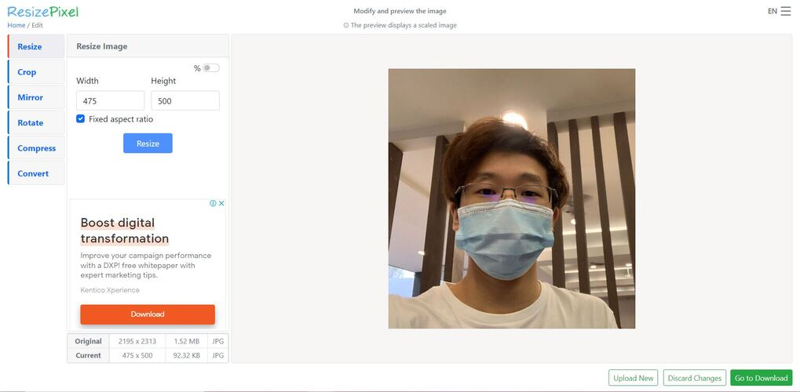
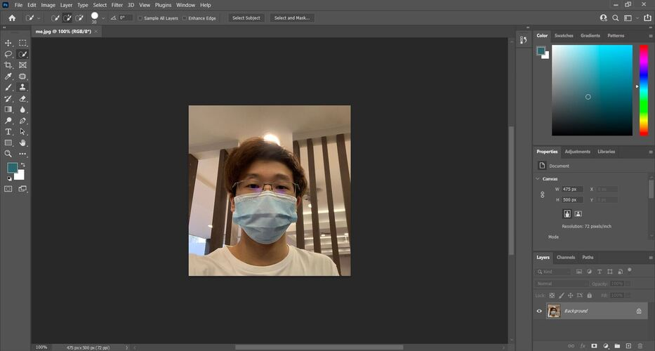
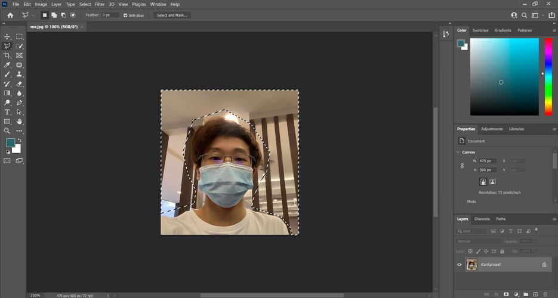
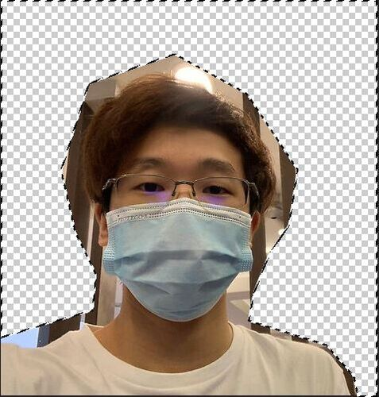

This page is explaining how to remove background of a image
Step 1
- have a photo of yourself and the background you want to change it to
- Resize the image heights
- open photoshop and upload the image of yourself
- Select the background with the lasso tool and delete it
- Smooth out the cutting by erasing the edges
- Upload the background image and layer it behind the picture of yourself


Step 2

Step 3

Step 4


Step 5

Step 6